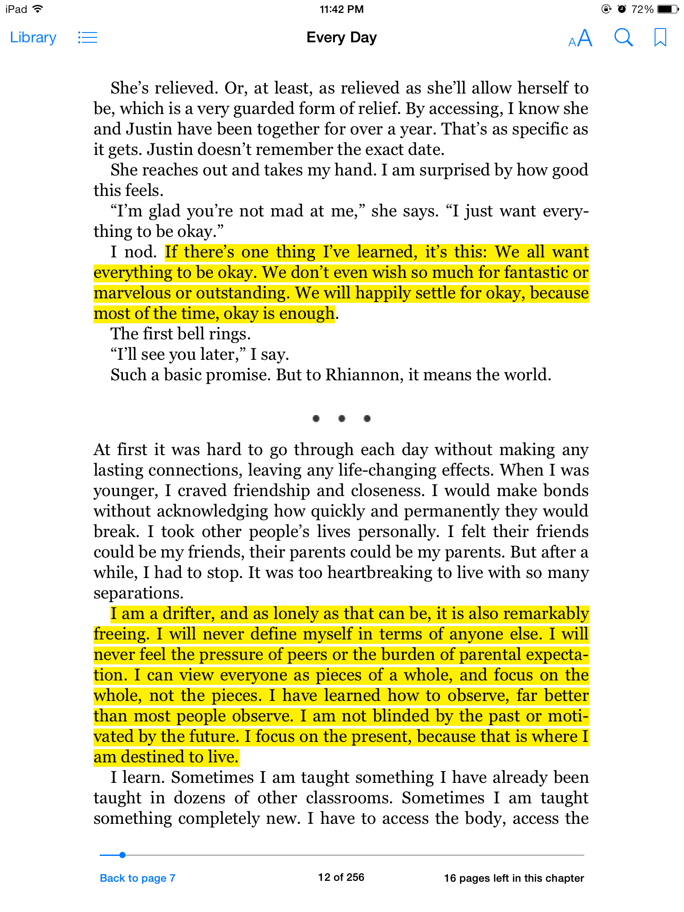
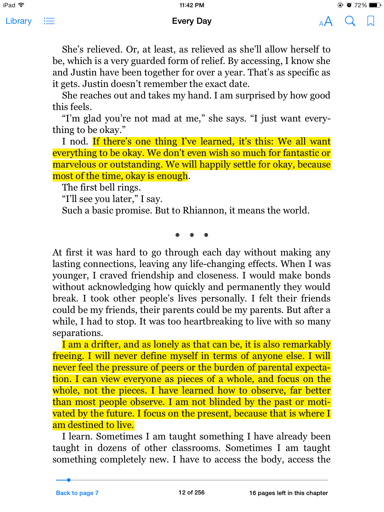

Excerpt from Every Day
This one is taken from the remnants of the trusted iPad that lasted the entirety of medschool. It no longer works. What pains me the most are the eBooks I’ve read and my bookmarks and highlights. *sigh*
This one is taken from the remnants of the trusted iPad that lasted the entirety of medschool. It no longer works. What pains me the most are the eBooks I’ve read and my bookmarks and highlights. *sigh*